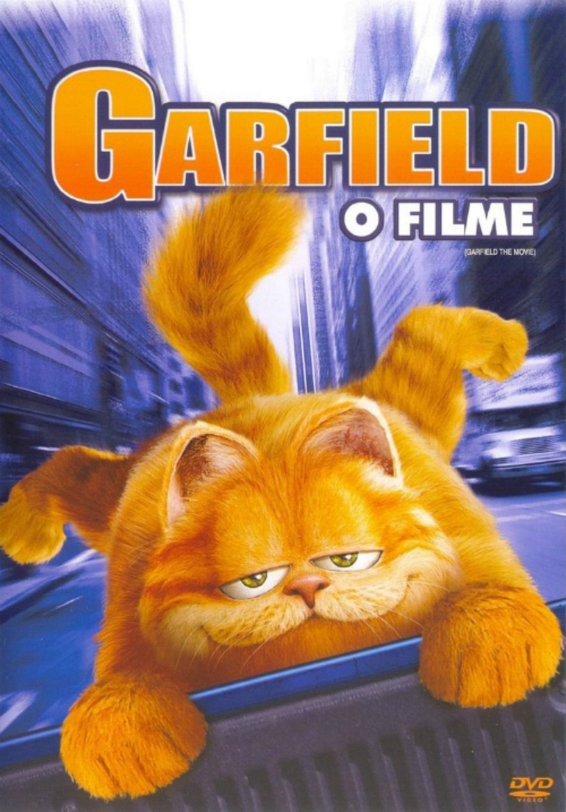

Garfield (Bill Murray), the fat, lazy, lasagna lover, has everything a cat could want. But when Jon Arbuckle (Breckin Meyer), in an effort to impress veterinarian and old high-school crush Liz (Jennifer Love Hewitt), adopts a dog named Odie and brings him home, Garfield gets the one thing he doesn't want. Competition. One night, Odie runs away and gets dog-napped after Garfield locks him outside. arfield, in an out of character move, goes to search for and rescue Odie with the help of a variety of animal friends along the way.